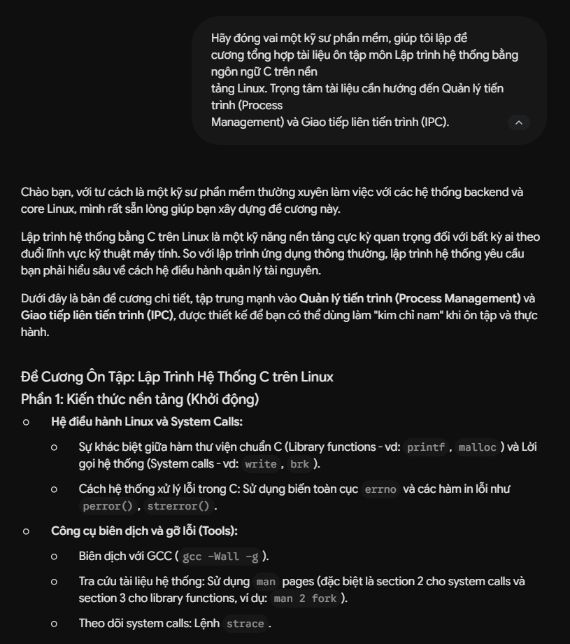
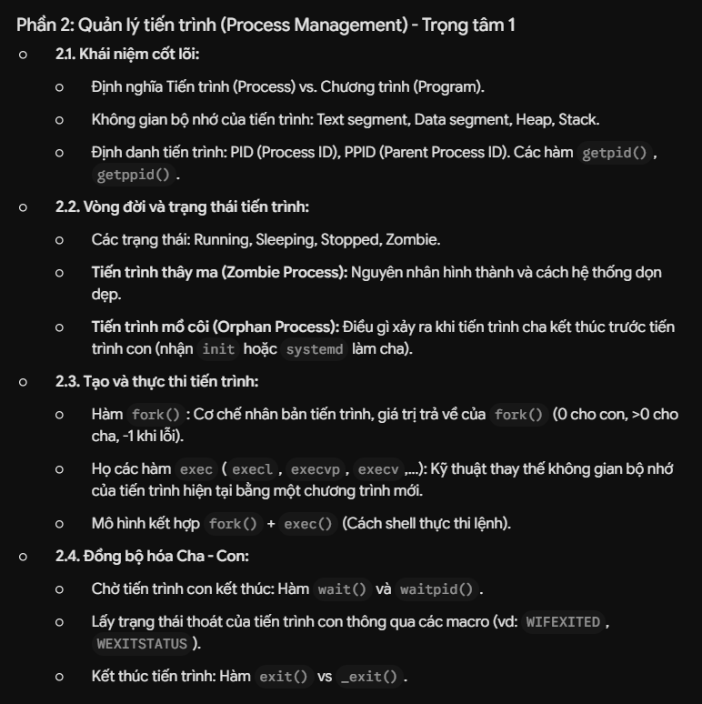
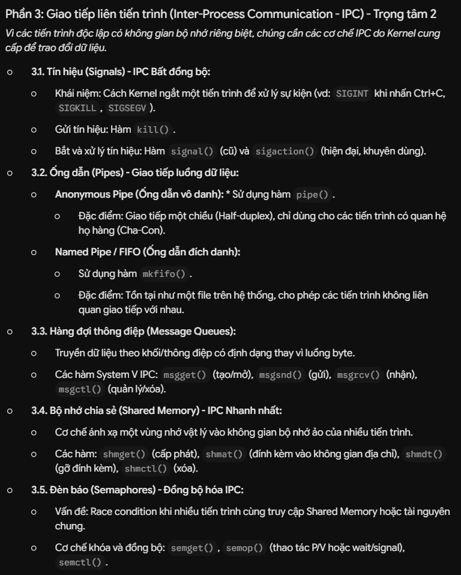
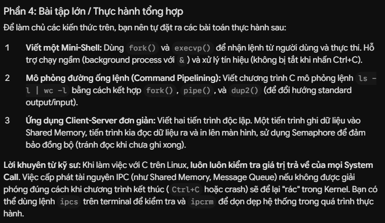
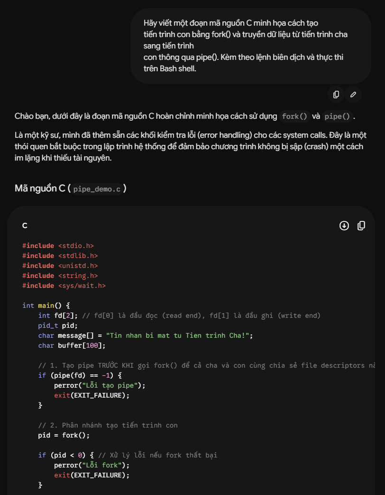
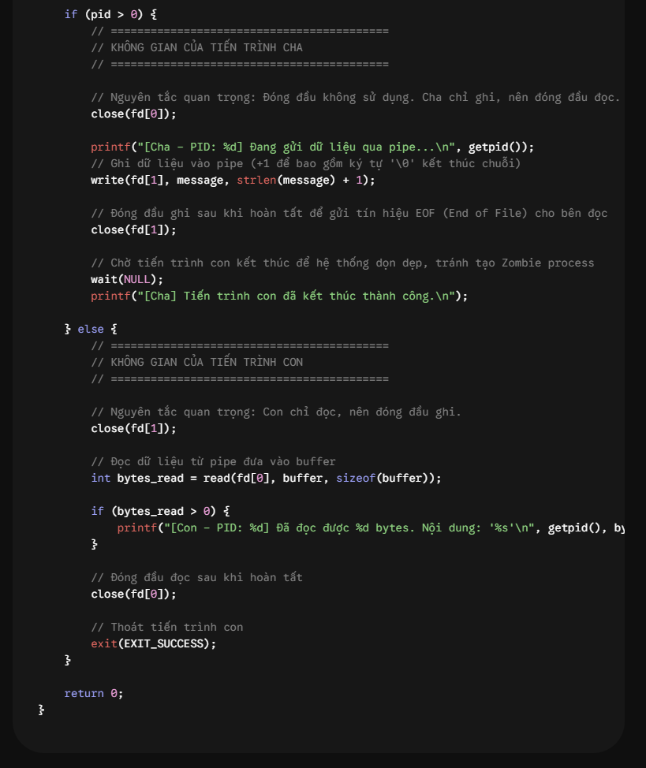
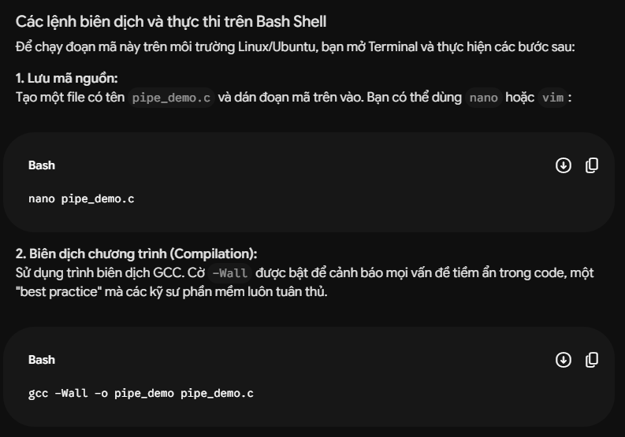
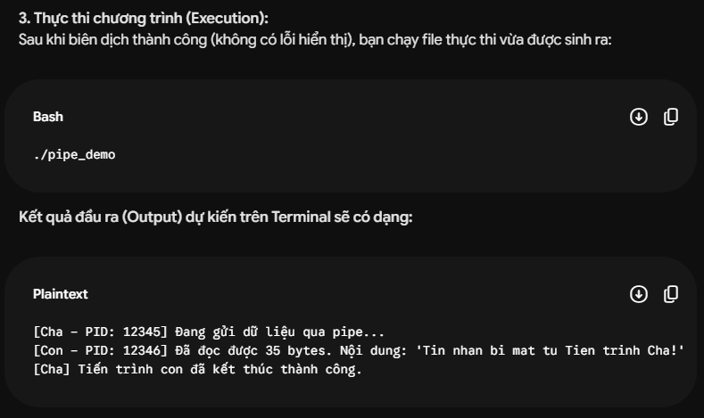

Để hiểu rõ định hướng của môi trường học thuật, dưới đây là bảng phân tích và so sánh chính sách sử dụng AI giữa Trường Đại học Công nghệ (VNU-UET) và Trường Đại học Khoa học Tự nhiên (VNU-HUS). Cả hai trường đều tuân thủ định hướng chung của Đại học Quốc gia Hà Nội nhưng có những điểm nhấn riêng phù hợp với đặc thù đào tạo.
| Tiêu chí | Trường Đại học Công nghệ (VNU-UET) | Trường Đại học Khoa học Tự nhiên (VNU-HUS) |
|---|---|---|
| Việc sử dụng AI trong học tập và nghiên cứu | Khuyến khích dùng AI làm trợ lực để tiếp cận các bài toán kỹ thuật, lập trình và thực tế. Không được phụ thuộc AI để thay thế hoàn toàn tư duy và năng lực cốt lõi. | Khuyến khích sử dụng AI như công cụ hỗ trợ học tập và nghiên cứu khoa học cơ bản, tuyệt đối không thay thế tư duy độc lập của người học. Cùng chung định hướng đưa AI vào học phần bắt buộc của ĐHQGHN từ năm nhất. |
| Phân loại sử dụng | Tuân thủ nghiêm ngặt nguyên tắc trung thực học thuật. Bất kỳ nội dung hay cấu trúc nào do AI gợi ý đều phải được ghi nhận và trích dẫn rõ nguồn gốc. | Cho phép sử dụng AI trong các khâu hỗ trợ (như tìm kiếm tài liệu, tổng hợp dữ liệu, gợi ý cấu trúc bài viết khoa học), nhưng nghiêm cấm việc dùng AI để giả mạo số liệu thực nghiệm hoặc viết thay luận văn. |
| Yêu cầu trích dẫn | Phải ghi nhận rõ ràng nguồn gốc nếu có sự can thiệp của AI vào bài làm/cấu trúc bài học. | Yêu cầu khai báo minh bạch việc sử dụng AI trong các báo cáo, khóa luận. Nộp bài có phần lớn nội dung do AI tạo ra mà không trích dẫn bị coi là vi phạm liêm chính học thuật. |
| Kiểm soát & Xử lý | Người dùng chịu trách nhiệm cuối cùng về tính chính xác của dữ liệu (tránh rủi ro AI bị "ảo giác"). Khai thác AI mà không trích dẫn sẽ bị xử lý vi phạm đạo văn theo quy chế. | Sinh viên và nghiên cứu sinh phải chịu trách nhiệm hoàn toàn về tính xác thực của dữ liệu và bài làm. Mọi hành vi lạm dụng AI sẽ bị rà soát và xử lý theo quy định về đạo đức nghiên cứu khoa học. |
- Nhận định cá nhân: Vì cùng thuộc hệ thống ĐHQGHN, cả VNU-UET và VNU-HUS đều có chung một triết lý: không cấm cản việc sử dụng trí tuệ nhân tạo, mà định hướng sinh viên sử dụng công cụ này một cách minh bạch và có trách nhiệm.
Tuy nhiên, do đặc thù khối ngành, VNU-UET nhấn mạnh việc dùng AI làm "trợ lực" giải quyết các bài toán kỹ thuật, lập trình, đòi hỏi sinh viên phải cẩn trọng với các "ảo giác" của AI trong code và logic. Trong khi đó, VNU-HUS là trường thiên về khoa học cơ bản, nên tính nguyên bản, sự trung thực trong số liệu thực nghiệm và đạo đức nghiên cứu khoa học được đặt lên hàng đầu. Cuối cùng, dù ở trường nào, trách nhiệm thẩm định tính chính xác của thông tin luôn thuộc về sinh viên.
Đầu ra của AI:




Đầu ra của AI:




Đánh giá: Kết quả của AI rất chính xác về mặt cú pháp ngôn ngữ C và cấu trúc lý thuyết hệ điều hành. Các hàm gọi hệ thống (system calls) được trình bày đúng chuẩn POSIX. Tuy nhiên, mã nguồn minh họa của AI khá "lý tưởng", thiếu các trường hợp xử lý lỗi khi chương trình bị kẹt hoặc khi sinh ra các tiến trình zombie (zombie processes) do tiến trình cha không gọi wait().
Cách chỉnh sửa và tích hợp (Tư duy phản biện): Dùng dàn ý của AI làm khung sườn cho tập tài liệu cá nhân, nhưng không tin tưởng tuyệt đối vào đoạn code lý thuyết. Em đã tự mang đoạn mã của AI vào môi trường máy ảo VirtualBox chạy Ubuntu để biên dịch và chạy thử nghiệm. Khi nhận ra hệ thống có nguy cơ treo tài nguyên nếu pipe không được đóng đúng cách, em đã tự nghiên cứu thêm qua tài liệu APUE và bổ sung một module riêng biệt có tên: "Bắt lỗi System Call và xử lý Memory Leak" vào đề cương.
Sự tích hợp này biến kiến thức tĩnh của AI thành trải nghiệm lập trình thực tiễn mang đậm dấu ấn cá nhân.
Trong phần mở đầu của tệp tài liệu tổng hợp môn học, em đã ghi chú rõ ràng: "Bộ tài liệu ôn tập Lập trình hệ thống này được cấu trúc hóa với sự hỗ trợ từ mô hình ngôn ngữ lớn Gemini (truy cập ngày 30/05/2026) trong việc xây dựng dàn ý và tra cứu nguyên lý IPC. Toàn bộ mã nguồn minh họa System Call đều đã được tác giả kiểm chứng, tinh chỉnh rủi ro rò rỉ bộ nhớ và biên dịch thực tế trên môi trường Linux."
Việc ứng dụng trí tuệ nhân tạo trong môi trường đại học đặt ra những thách thức đạo đức mang tính hệ thống, đòi hỏi người học phải nhận thức rõ ràng trên 3 khía cạnh cốt lõi:
Sự hỗ trợ hợp lý của AI giống như một "người cố vấn": giúp sinh viên tìm kiếm tài liệu, gợi ý cấu trúc bài viết, giải thích các khái niệm khó hiểu hoặc kiểm tra lỗi ngữ pháp. Ở mức độ này, người học vẫn là người làm chủ tư duy và chịu trách nhiệm tổng hợp kiến thức. Ngược lại, gian lận học thuật xảy ra khi người học biến AI thành "người làm thay". Việc sao chép nguyên văn các đoạn văn bản, lời giải bài tập hay ý tưởng do AI tạo ra để nộp chấm điểm chính là hành vi đánh lừa giảng viên về năng lực thực sự của bản thân. Ranh giới này nằm ở chỗ: ai là tác giả thực sự của sản phẩm cuối cùng.
Các mô hình AI tạo sinh được huấn luyện trên khối lượng dữ liệu khổng lồ chứa hàng tỷ văn bản, công trình nghiên cứu của con người. Khi AI tạo ra một câu trả lời hoàn hảo, nó thực chất đang tổng hợp chất xám của rất nhiều tác giả ẩn danh. Việc sinh viên vô tư sử dụng các đoạn nội dung này mà không khai báo chính là hình thức "đạo văn tàng hình", vi phạm nghiêm trọng quyền sở hữu trí tuệ. Minh bạch hóa việc sử dụng AI thông qua các trích dẫn rõ ràng là nguyên tắc đạo đức bắt buộc để tôn trọng bản quyền trong kỷ nguyên số.
Lạm dụng AI mang lại hậu quả dài hạn và vô hình: sự thui chột năng lực cốt lõi. Nếu sinh viên có thói quen hỏi AI để lấy đáp án ngay lập tức, họ sẽ mất dần kỹ năng đọc hiểu tài liệu dài, suy giảm khả năng tư duy phản biện và giải quyết vấn đề. Khi AI làm thay việc suy nghĩ, sự sáng tạo cá nhân sẽ bị dập tắt, thay vào đó là những bài làm mang tính khuôn mẫu, thiếu chiều sâu cảm xúc và thiếu góc nhìn độc lập của người học.
Để việc sử dụng AI mang lại giá trị bền vững và không vi phạm các tiêu chuẩn đạo đức học thuật, tôi đã xây dựng bộ nguyên tắc cá nhân dựa trên Khung 4T (Tự chủ - Trách nhiệm - Tôn trọng - Tối ưu), bao gồm 7 nguyên tắc hành động cụ thể như sau:
1. Nguyên tắc "Tư duy đi trước": Trước khi gõ bất kỳ câu hỏi nào vào các công cụ AI, tôi phải tự mình phác thảo ý tưởng, lập sơ đồ tư duy hoặc thử giải quyết vấn đề bằng kiến thức đã học. AI chỉ được sử dụng khi bản thân đã có một nền tảng hiểu biết nhất định về bài toán để tránh bị dẫn dắt tư duy.
2. Nguyên tắc "Sản phẩm nguyên bản": AI chỉ được phép đóng vai trò là "trợ lý vòng ngoài" (tìm kiếm tài liệu, gợi ý dàn ý, kiểm tra lỗi chính tả/logic). Sản phẩm cuối cùng bắt buộc phải được đúc kết từ ngôn ngữ và lập luận nguyên bản của chính tôi.
3. Nguyên tắc "Kiểm chứng chéo" (Cross-check): Với tư cách là người nộp bài, tôi chịu trách nhiệm 100% về nội dung. Mọi luận điểm, trích dẫn hay công thức do AI cung cấp đều phải được đối chiếu lại bằng giáo trình, tài liệu nội bộ của trường hoặc các nguồn học thuật uy tín để loại bỏ rủi ro AI bị "ảo giác" (Hallucination).
4. Nguyên tắc "Minh bạch dấu vết": Tôn trọng chất xám mạng lưới bằng cách luôn có một phần "Tuyên bố sử dụng AI" trong các bài tập lớn. Khai báo rõ ràng tôi đã sử dụng công cụ nào và áp dụng trong khâu nào của quy trình làm bài.
5. Nguyên tắc "Tuân thủ luật chơi": Tôn trọng tuyệt đối quy định của Giảng viên phụ trách môn học. Nếu học phần có quy định cấm sử dụng trí tuệ nhân tạo, toàn bộ các công cụ này sẽ bị gỡ bỏ khỏi quy trình làm bài.
6. Nguyên tắc "Lá chắn dữ liệu": Có ý thức bảo vệ an toàn thông tin bằng cách tuyệt đối không chia sẻ các dữ liệu mang tính cá nhân, thông tin của sinh viên khác, hoặc các tài liệu/mã nguồn nội bộ chưa được công bố của nhà trường lên các nền tảng AI cộng đồng.
7. Nguyên tắc "Nâng cấp câu lệnh" (Prompt Engineering): Tránh lạm dụng AI bằng những câu hỏi hời hợt, lười biếng. Thay vào đó, chủ động học cách đóng vai, chia nhỏ vấn đề và đặt câu lệnh tối ưu để biến AI thành một công cụ nghiên cứu sâu sắc.